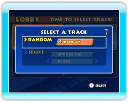

À l’accueil (LOBBY), vous pouvez changer la couleur de votre moto en appuyant sur . Appuyez sur pour confirmer. Si vous voulez quitter l’accueil (LOBBY), appuyez sur pour accéder au menu des options, et sélectionnez DISCONNECT (déconnecter).
Note : La couleur du nom des joueurs indique dans quelle région ils habitent. Un nom en blanc indique que le joueur habite en Amérique, un nom en bleu, en Europe/Australie, et un nom en rouge, au Japon. Votre nom apparaîtra toujours en jaune.

Sélectionnez un parcours que vous avez déverrouillé. Une fois que tous les joueurs ont sélectionné un parcours, un de ces parcours est alors choisi au hasard.
Une fois que le joueur en première position termine la course, le compte à rebours s’enclenche et les autres joueurs doivent atteindre la ligne d’arrivée en moins de 30 secondes ou ils sont automatiquement disqualifiés.
À la fin de la course, vous gagnerez des ANYONE POINTS (points n’importe qui). Plus votre course est réussie, plus vous gagnez de points. Les ANYONE POINTS sont utilisés pour déverrouiller des parcours spéciaux.
Note : Si vous voyez des joueurs transparents, cela signifie qu’ils ont des problèmes de connexion. Ils resteront transparents jusqu’à ce que leur connexion à Internet s’améliore.

 . Appuyez sur pour confirmer. Si vous voulez quitter l’accueil (LOBBY), appuyez sur
. Appuyez sur pour confirmer. Si vous voulez quitter l’accueil (LOBBY), appuyez sur  pour accéder au menu des options, et sélectionnez DISCONNECT (déconnecter).
pour accéder au menu des options, et sélectionnez DISCONNECT (déconnecter).